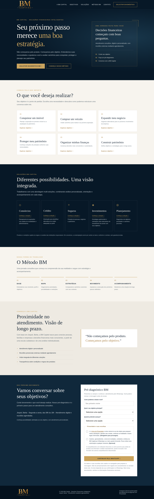

BM Capital — Missão 02
Galeria local de capturas. Não é o site interativo e não representa aprovação do responsável. Nenhuma publicação ou mensagem real foi realizada.
Checklist de validação · Relatório
As imagens integrais permitem rolar até o rodapé. Fontes e controles nativos podem variar no aparelho real.
